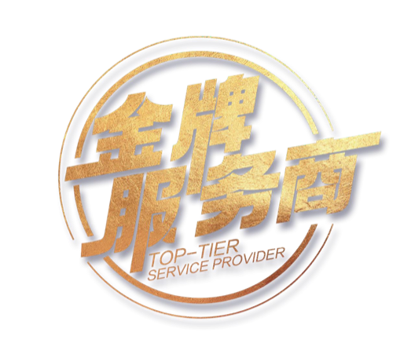

25 题 · 约 6–8 分钟
代理商动销 × 个人IP
双维评估
医美上游代理商成长力评估 · 金牌服务商出品
做医美上游代理，业绩卡住的往往不是产品，而是三件事：
- 01机构开了户，动销就是起不来，问题出在哪一环？
- 02团队推不动、案例出不来，先补哪一块？
- 03老板要不要做个人IP？做了怎么接住客人？
动销是一套系统：任何一个环节等于零，整体就等于零。这份评估帮你定位自己处在哪个阶段、最薄弱的环节是什么。请按真实情况选择，结果只有你自己能看到。
第二部分 · 个人IP评估
业务部分完成，还剩 10 题
线上流量正在改写上游生意：会做内容的代理商，见机构老板的效率完全不同。接下来看看你的个人IP处在什么位置。
金牌服务商 · 评估结果
动销业务
个人IP
动销业务诊断
个人IP诊断
下一步：预约一对一深度评估
- ①把这页评估结果截图保存
- ②扫码添加「金牌服务商」之奇总助理微信
- ③把截图发给助理，预约一对一深度评估

助理微信可在直播间
或视频评论区获取
或视频评论区获取
深度评估会结合你的机构盘、团队与账号现状，逐项过一遍。
也可以留下联系方式，助理主动联系你（选填）
不留也完全不影响查看和保存结果。
信息仅用于评估沟通，不对外公开。
金牌服务商 · 动销增长实战体系